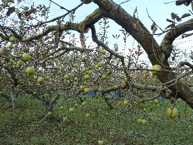
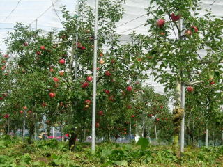

飯南町でリンゴ狩りしました。
2013/10/27
赤来高原観光りんご園でリンゴ狩りです。

今の時季のリンゴは「大林」でした。青いりんごが大量です。
より美味しそうな、熟れたりんごを一生懸命探して食べました。宝探しみたいでした。
お腹いっぱいリンゴを食べて帰りました。リンゴ園でナイフが借りれますが、ちっと小さいので使い慣れたナイフかピーラーを持っていくと簡単です。
島根県飯石郡飯南町下赤名2814
2013/10/27
赤来高原観光りんご園でリンゴ狩りです。

今の時季のリンゴは「大林」でした。青いりんごが大量です。
より美味しそうな、熟れたりんごを一生懸命探して食べました。宝探しみたいでした。
お腹いっぱいリンゴを食べて帰りました。リンゴ園でナイフが借りれますが、ちっと小さいので使い慣れたナイフかピーラーを持っていくと簡単です。
2009/9/26
赤木高原観光りんご園でリンゴ狩りをしました。
今の時期は涼夏っていう新しい種類のリンゴのりんご狩りでした。リンゴの木が100本位植わった場所だったんですが、赤く色づいた林檎が沢山実ってました。

味覚狩りって人気のある所だと、熟れた実はどんどん採られてしまって残ってるのは少し青い実であまり美味しくなかったりするんですが、今回はしっかり甘くなった実が沢山付いてて良かったです。
行った時はお客さんが少なく、とっても快適にのんびりと林檎狩りが出来、いい休日が過ごせました。
柔らかい歯ごたえで、しっかり甘くて美味しい林檎を沢山食べて帰りました。
大人500円子供300円の料金はお手ごろでいいですね。